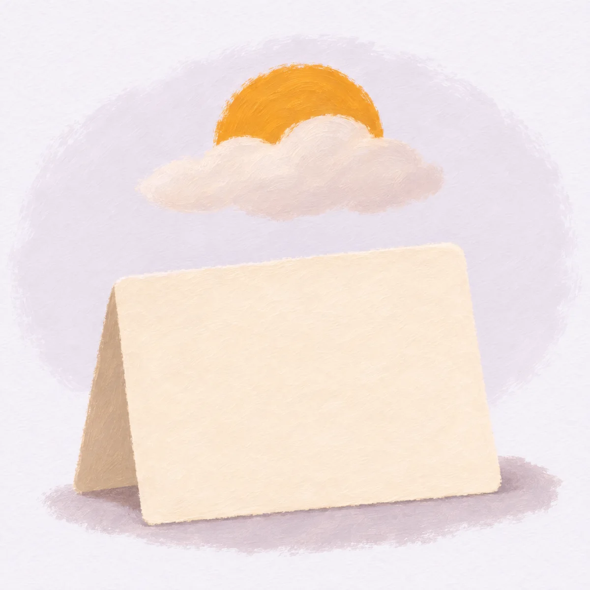

Hoje com Caio
Foco: Rotinas e transições.

Ainda não dá para sugerir um card para Caio
Duas respostas ficaram como “não sei”, e sem elas não há como saber se os cards servem. Preferimos não mostrar nada a mostrar algo que pode não caber.
- O que vocês têm em casa
- Quanto tempo você tem por dia